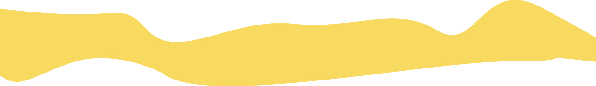
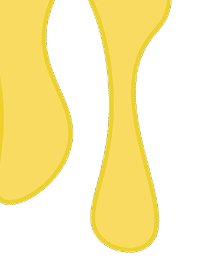
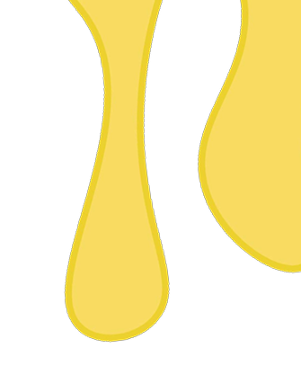
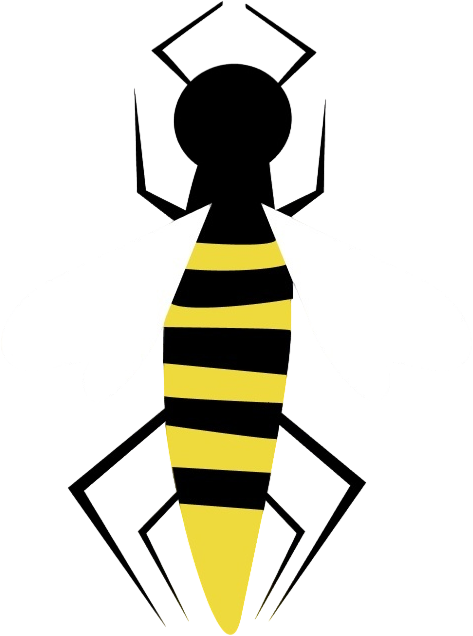
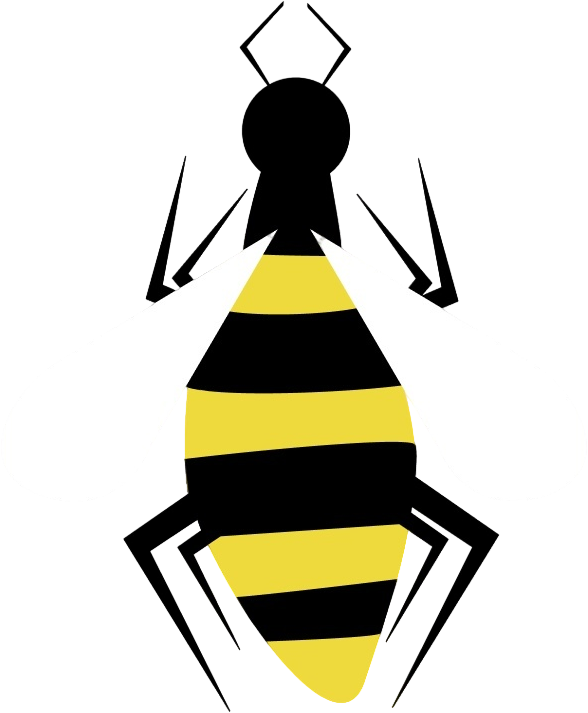
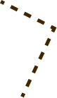
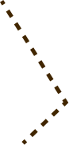
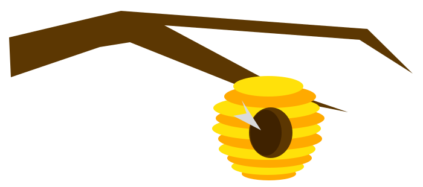
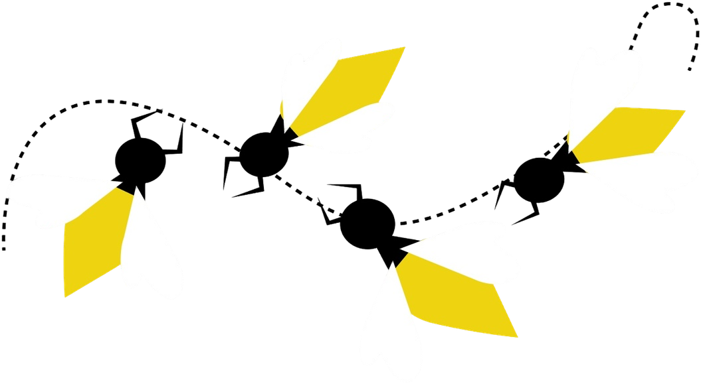

История шрифта

PT Mono — шрифт, дополняющий гарнитуру ПТ Санс и ПТ Сериф, разработанную в рамках проекта общенациональных бесплатных шрифтов. ПТ Моно предназначен в первую очередь для служебных надобностей — формуляров, таблиц, анкет, бланков и т. п.
Разработка PT Mono началась
в 2010 году. Автором шрифта стала
Александра Королькова, активное участие
в проекте принимала Изабелла Чаева.
Финансировала разработку компания Google
в рамках проекта Google Fonts.
PT Mono стал логичным продолжением работы над гарнитурой «ПТ Проект».
Первые два шрифта серии PT Sans и PT Serif — были выпущены
в 2009 и 2010 годах при финансовой поддержке Федерального агентства
по печати и массовым коммуникациям.
PT Mono же создавался узкоспециализированным инструментом для работы
с фиксированными ширинами символов.
Начертания




Regular
Bold

Символы
PT Mono — моноширинный, то есть все его символы занимают одинаковое пространство по горизонтали.
- Ж
- (
- )
- Р
- =
- ?
- [
- ]
- *
- ;
- Д
- /
- \
- .
- Щ
- #
- {
- }
- Н
- $
- “
- <
- >
- З
- ₽
- +
- @
- №
- Л
- -
- &
Языки
поддерживает 133 языка
- Шведский - bi
- Русский-пчела
- Якутский-арыы үөнэ
- Польский-pszczoła
- Испанский-abeja
- Латышский-bite
- Казахский-ара
- Башкирский-бал ҡорто
- Калмыцкий-зүг
Лигатуры

љ њ fi fl